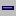

Winbox
Консоль Winbox використовується для конфігурації і доступу до особливостей управління за допомогою графічного інтерфейсу (GUI). Всі функції Winbox максимально наближені до функцій традиційної консолі: всі функції Winbox розташовані в тій же ієрархії як і функції термінальній консолі і навпаки (крім функцій які не реалізовані в Winbox). Саме з цих причин в документації немає опису функцій Wnbox. Завантажувач консолі Winbox - winbox.exe. Його можна скачати з MikrotikRouterOS, за адресою http://router_address/winbox/winbox.exe. Використовуйте будь-який браузер для отримання виконуваного файлу winbox.exe завантажувача. Якщо ваш Маршрутизатор не налаштований, ви також можете отримати цей файл за адресою http://router_address.
1. Переходимо на сайт http://www.mikrotik.com/download

2. Скачуємо Winbox з сайту або за цим посиланням.

3. Запускаємо програму.

4. Стартове вікно програми.

Кнопки
- шукає і відображає MNDP (MikroTik Neighbor Discovery Protocol), або CDP (Cisco Discovery Protocol) пристрої.
- почати роботу з маршрутизатором, обраним по IP (та номером портів якщо ви змінили це значення. По-замовчуванню 80), по MAC адресу (якщо маршрутизатор знаходиться в іншій підмережі), імені користувача та паролю.
- збереження поточного сеансу в списку. Для запуску клікніть двічі на вибраному елементі.
- Видалення обраного елемента зі списку.
- видалення всіх елементів зі списку, очищення кешу на локальному диску, імпортування адрес з wbx файлу або експортування їх в wbx файл.
5. Пошук маршрутизатора.

Якщо невдається підключитися по ІР-адресі, то можна зробити це через MAC-адрес. Просто треба двічі клацнути на MAC-адресі.

6. Початкова конфігурація маршрутизатора.

Маршрутизатор пропонує встановити конфігурацію за замовчуванням. Якщо вибрати Remove Configuration, то отримаємо чистий маршрутизатор без конфігурації. Якщо вибрати OK, то скрипт (який можна подивитися натиснувши Show Script...) налаштує маршрутизатор наступним чином: на 1-му порту працює DHCP-клієнта до якого можна підключити Інтернет, порти 2-5 роздають Інтернет користувачам по DHCP.
7. Зовнішній вигляд консолі Winbox.

Консоль WinBox використовує TCP порт 8291. Після підключення до маршрутизатора ви можете працювати з його конфігурацією через консоль WinBox і виконувати ті ж самі завдання, що й у звичайній консолі.
Короткий огляд загальних функцій Ви можете використовувати меню навігації по меню конфігурації маршрутизатора (відкритим вікнам). Подвійним клацанням, на якому або елементі списку у вікні ви можете відкрити вікно конфігурування обраного елемента і т.д .. Нижче показані деякі елементи управління консолі WinBox. Щоб відкрити потрібну вікна, клікніть один раз на відповідному пункті меню.
 Додати новий.
Додати новий.-  Видалити існуючий.
- Включити елемент
- Відключити елемент
- Створити або редагувати коментар
- Оновити вікно
- Скасувати дію
- Повторити дію
- Відключитися від консолі WinBox
Senenko Vitalik Org. Kyiv. 2015.